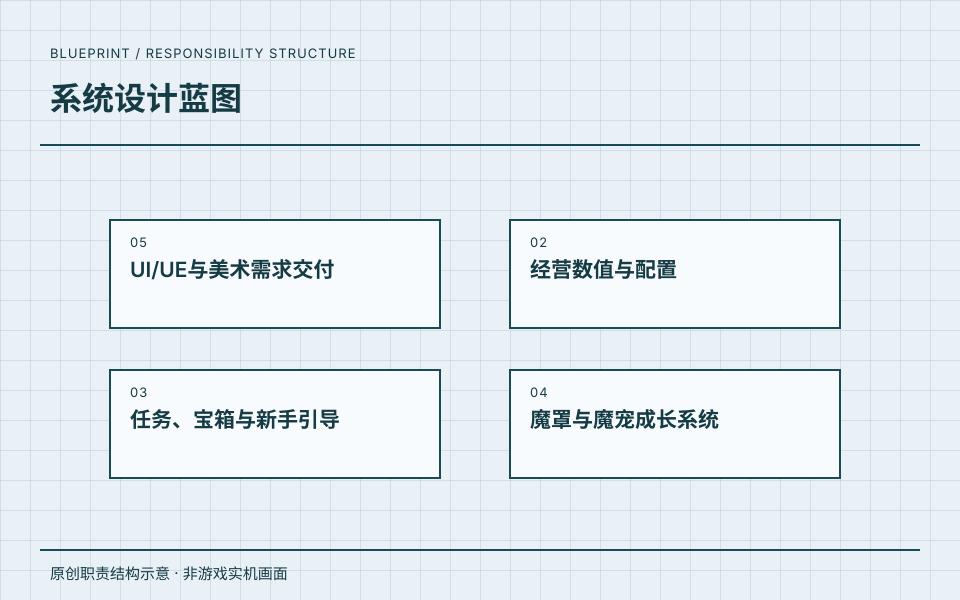

05 / 系统设计蓝图
北京牧游科技有限公司.
围绕从 0 到 1 的玩法系统设计，以及任务、好感度、宠物等系统开展主策划工作。

主策划
围绕从 0 到 1 的玩法系统设计，以及任务、好感度、宠物等系统开展主策划工作。
工作职责
- 01从 0 到 1 的玩法、系统与数值
- 02任务系统
- 03好感度系统
- 04宠物系统
参与项目
任职记录
围绕从 0 到 1 的玩法系统设计，以及任务、好感度、宠物等系统开展主策划工作。
- 任职公司
- 北京牧游科技有限公司
- 角色
- 主策划
- 时间
- 2021.05—2021.12
任职、角色与职责依据本人履历及确认。图示是本站原创的职责结构表达。
PROJECT EVIDENCE / 我的小镇
经营循环与交互资料
从新手进入、经营成长到任务与宝藏状态，阅读具体的流程图与界面线框。